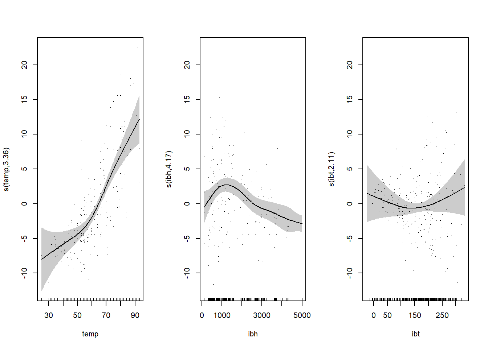

11 Uogólnione modele addytywne
Modele liniowe, jako techniki klasyfikacji i regresji, mają niewątpliwą zaletę - jawna postać zależności pomiędzy predyktorami i zmienną wynikową. Często w rzeczywistości tak uproszczony model nie potrafi oddać złożoności natury badanego zjawiska. Dlatego powstał pomysł aby w miejsce kombinacji liniowej predyktorów wstawić kombinację liniową ich funkcji, czyli \[\begin{equation} \E(Y|X)=f(X) = \sum_{i=1}^M\beta_mh_m(X), \tag{11.1} \end{equation}\] gdzie \(h_m:\mathbb{R}^d\to\mathbb{R}\) nazywana często funkcją bazową (ang. linear basis expansion). Wówczas w zależności od postaci funkcji bazowej otrzymujemy modele z różnymi poziomami elastyczności:
- gdy \(h_m(X)=X_m,\ m=1,\ldots,M\), to otrzymujemy model liniowy;
- gdy \(h_m(X)=X_j^2\) lub \(h_m(X)=X_jX_k\), to otrzymujemy struktury wielomianowe, charakteryzujące się większą elastycznością modelu;
- gdy \(h_m(X)=\log X_j\) lub \(h_m(X)=\sqrt{X_j}\), to uzyskujemy nieliniowość czynników wchodzących w skład kombinacji liniowej (11.1);
- dopuszczalne są również kawałkami liniowe funkcje postaci \(h_m(X)= I(l_m\leq X_k <u_m)\), gdzie \(I\) jest funkcją charakterystyczną (ang. indicator) przedziału \([l_m,u_m)\).
Zbiory wszystkich funkcji bazowych definiowanych w ten sposób tworzy słownik funkcji bazowych \(\mathcal{D}\). Aby kontrolować złożoność modeli, mając do dyspozycji tak zasobny słownik, wprowadza się następujące podejścia:
- ogranicza się klasę dostępnych funkcji bazowych \[\begin{equation} f(X) = \sum_{j=1}^df_j(X_j)=\sum_{j=1}^d\sum_{m=1}^{M_j}\beta_{jm}h_{jm}(X_j), \end{equation}\]
- włącza się do modelu jedynie te funkcje ze słownika \(\mathcal{D}\), które istotnie poprawiają dopasowanie modelu,
- używa się metod penalizowanych, czyli dopuszcza się stosowanie wszystkich funkcji bazowych ze słownika \(\mathcal{D}\), ale współczynniki przy nich stojące są ograniczane.
11.1 Przypadek jednowymiarowy
Dla uproszczenia rozważań przyjmiemy, że \(X\) jest jednowymiarowe.
Rysunek 11.1: Przykładowe zastosowanie kilku rodzajów funkcji bazowych. Wykres w lewym górnym rogu powstał ze stałych na przedziałach, wykres w górnym prawym rogu powstał z liniowych funkcji bazowych na przedzialach, w lewym dolnym rogu model powstał również z liniowych funkcji bazowych na przedzialach ale z założeniem ciągłości, a prawym dolnym rogu powstał z zastosowania funcji bazowej \(\max(X-\xi_1,0)\)
Rysunek 11.2: Kolejne wykresy przedstawiają coraz bardziej gładkie modele będące efektem dodawania wielomianów trzeciego stopnia na przedziałach. Na każdym kolejnym modelu mymuszone zostały silniejsze założenia dotyczące gładkości
Przykładowo sześcienny splajn2 dla dwóch punków węzłowych składa się z następujących funkcji bazowych
\[\begin{gather} h_1(X)=1,\quad h_3(X)=X^2,\quad h_5(X)=(X-\xi_1)_+^3\\ h_2(X)=X,\quad h_4(X)=X^3,\quad h_6(X)=(X-\xi_2)_+^3. \end{gather}\]
Zachowanie wielomianów poza punktami węzłowymi jest czasami bardzo dziwne. Zdarza się, że charakteryzują się tam dużą zmiennością. Dlatego wprowadza się takie splajny aby w obszarach brzegowych zachowywały się przewidywalnie. Naturalny splajn sześcienny zakłada liniowość modelu poza węzłami brzegowymi. Dla \(K\) węzłów naturalny splajn sześcienny składa się z następujących funkcji bazowych
\[\begin{gather} N_1(X)=1,\quad N_2(X)=X,\quad N_{k+2}(X)=d_k(X)-d_{K-1}(X), \end{gather}\] gdzie \(d_k(X)=\frac{(X-\xi_k)^3_+-(X-\xi_K)^3_+}{\xi_K-\xi_k}.\)
Estymacji parametrów modelu dokonujemy metodą najmniejszych kwadratów, minimalizując \[\begin{equation} RSS(f,\lambda) = \sum_{i=1}^N(y_i-f(x_i))^2+\lambda\int(f''(t))^2dt, \end{equation}\] gdzie \(\lambda\) jest parametrem wygładzania. Pierwsze wyrażenie po prawej stronie to ocena dopasowania, a drugie to kara za krzywoliniowość. Dla naturalnego splajna \[\begin{equation} f(x)=\sum_{j=1}^NN_j(x)\beta_j \end{equation}\] minimalizujemy \[\begin{equation} RSS(\beta, \lambda)=(\boldsymbol y -\boldsymbol N\beta)'(\boldsymbol y-\boldsymbol N\beta)+\lambda\beta'\boldsymbol \Omega \beta, \end{equation}\] gdzie \(\{\boldsymbol N\}_{ij}= N_j(x_i)\) i \(\{\boldsymbol \Omega\}_{jk}=\int N''_j(t)N''_k(t)dt\). Rozwiązaniem zaganienia minimalizacji \(RSS(\beta,\lambda)\) jest \[\begin{equation} \hat{\beta}=((\boldsymbol N'\boldsymbol N)+\lambda\boldsymbol \Omega)^{-1}\boldsymbol N'\boldsymbol y. \end{equation}\]
11.2 Przypadek wielowymiarowy
W przypadku gdy \(X\in \mathbb{R}^d\) poszukujemy takiej \(d\)-wymiarowej regresji \(f(x)\), która będzie minimalizowała wyrażenie \[\begin{equation} \min_f\sum_{i=1}^N(y_i-f(x_i))^2+\lambda J(f), \end{equation}\] gdzie \(J\) jest odpowiednią funkcją wyrażającą krzywoliniowość modelu. Dla \(X\in \mathbb{R}^2\) przyjmuje postać \[\begin{equation} J(f)=\iint_{\mathbb{R}^2}\left[\left(\frac{\partial^2 f(x)}{\partial^2 x_1}\right)^2+2\left(\frac{\partial^2 f(x)}{\partial x_1\partial x_2}\right)^2+ \left(\frac{\partial^2 f(x)}{\partial^2 x_2}\right)^2\right]dx_1dx_2. \end{equation}\] Rozwiązanie przyjmuje postać \[\begin{equation} f(x) = \beta_0+\beta'x+\sum_{i=1}^N \alpha_ih_i(x), \end{equation}\] gdzie \(h_i(x)=||x-x_j||^2\log||x-x_j||\).
11.3 Uogólnione modele addytywne
Przez uogólnione modele addytywne (ang. Generalized Additive Models) rozumiemy klasę modeli, które poprzez funkcję łączącą, opisują warunkową wartość zmiennej wynikowej w następujący sposób \[\begin{equation} g(\E(Y|X))=g(\mu(X))=\alpha+f_1(X_1)+\dots+f_d(X_d), \end{equation}\] gdzie \(g\) jest funkcją łączącą. Najczęściej stosowanymi funkcjami łączącymi są:
- \(g(\mu)=\mu\) - stosowana w modelach, gdy zmienna wynikowa ma rozkład normalny;
- \(g(\mu)=\logit\mu\) - stosowana, gdy zmienna wynikowa ma rozkład dwumianowy;
- \(g(\mu)=\probit\mu\) - stosowana również w przypadku gdy zmienna ma rozkład dwumianowy, a \(\Phi^{-1}\) oznacza odwrotność dystrybuanty standaryzowanego rozkładu normalnego;
- \(g(\mu)=\log\mu\) - stosowana, gdy zmienna wynikowa jest zmienną typu zliczeniowego (rozkład Poissona).
11.3.1 Algorytm uczenia modelu GAM
Algorytm uczenia wstecznego (ang. backfitting) przebiega wg następujących kroków:
- Ustalamy wstępne oszacowania na \(\alpha=\bar{y}\) i \(\hat{f}_j=0\).
- Dla \(j=1,\ldots,d,1,\ldots,d,1,\ldots\) powtarzamy szacowanie \[\begin{align} \hat{f}_j\leftarrow &\mathcal{S}_j\left[(y_i-\hat{\alpha}-\sum_{k\neq j}\hat{f}_k(x_{ik}))^N_1\right],\\ \hat{f}_j\leftarrow &\hat{f}_j-\frac{1}{N}\sum_{i=1}^N\hat{f}_j(x_{ij}) \end{align}\] dopóki \(\hat{f}_j\) osiągnie zbieżność. Funkcja \(\mathcal{S}_j\left[(y_i-\hat{\alpha}-\sum_{k\neq j}\hat{f}_k(x_{ik}))^N_1\right]\) jest jednowymiarowym sześciennym splajnem o \(N\) węzłach. W jej miejsce można przyjąć również inne funkcje, takie jak: jednowymiarowe lokalne regresje wielomianowe (ang. LOESS - locally estimated scatterplot smoothing), regresje liniowe, wielomianowe.
gam pakietu mgcv (Wood 2003).
library(faraway)
head(ozone)## O3 vh wind humidity temp ibh dpg ibt vis doy
## 1 3 5710 4 28 40 2693 -25 87 250 33
## 2 5 5700 3 37 45 590 -24 128 100 34
## 3 5 5760 3 51 54 1450 25 139 60 35
## 4 6 5720 4 69 35 1568 15 121 60 36
## 5 4 5790 6 19 45 2631 -33 123 100 37
## 6 4 5790 3 25 55 554 -28 182 250 38library(mgcv)## Loading required package: nlme## This is mgcv 1.8-26. For overview type 'help("mgcv-package")'.mod.gam <- gam(O3~s(temp, bs = "cr", m = 2)+s(ibh)+s(ibt), data = ozone)
summary(mod.gam)##
## Family: gaussian
## Link function: identity
##
## Formula:
## O3 ~ s(temp, bs = "cr", m = 2) + s(ibh) + s(ibt)
##
## Parametric coefficients:
## Estimate Std. Error t value Pr(>|t|)
## (Intercept) 11.7758 0.2382 49.44 <2e-16 ***
## ---
## Signif. codes: 0 '***' 0.001 '**' 0.01 '*' 0.05 '.' 0.1 ' ' 1
##
## Approximate significance of smooth terms:
## edf Ref.df F p-value
## s(temp) 3.357 4.216 20.758 5.99e-16 ***
## s(ibh) 4.171 5.072 7.344 1.37e-06 ***
## s(ibt) 2.111 2.729 1.403 0.213
## ---
## Signif. codes: 0 '***' 0.001 '**' 0.01 '*' 0.05 '.' 0.1 ' ' 1
##
## R-sq.(adj) = 0.708 Deviance explained = 71.7%
## GCV = 19.348 Scale est. = 18.724 n = 330W powyższym modelu użyto splajnów jako funkcji \(f_i\). W przypadku zmiennej temp był to sześcienny splajn z regularyzacją w postaci ciągłości drugiej pochodnej, a pozostałe są prostymi splajnami. Dopasowanie modelu sięga 71.7% a wartość uogólnionego sprawdzianu krzyżowego 19.35.
Poniższy wykres pokazuje rodzaje transformacji użyte przy dopasowaniu modelu.
par(mfrow = c(1,3))
plot(mod.gam, shade = T, residuals = T)
par(mfrow=c(1,1))Bibliografia
Wood, S. N. 2003. “Thin-Plate Regression Splines.” Journal of the Royal Statistical Society (B) 65 (1): 95–114.
czyli funkcja łączona↩